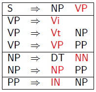
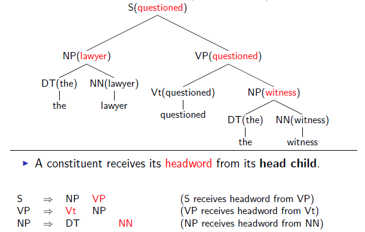
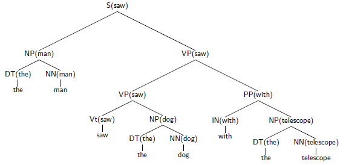
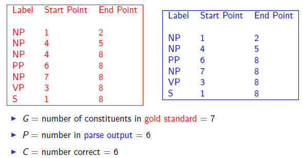

Lexicalization of a treebank
The first key idea is to add annotations specifying the head of each rule, which in some sence is an additional piece of information in our CFG. Each context-free rule has one “special” child that is the head of the rule. The intuition is that the head is the central sub-constituent and the semantic predicate of each rule. e.g.,

Rules which Recover Heads: An Example for NPs
If the rule contains NN(singular noun), NNS(plural noun), or NNP(proper noun): Choose the rightmost NN, NNS, or NNP
Else If the rule contains an NP: Choose the leftmost NP
Else If the rule contains a JJ: Choose the rightmost JJ
Else If the rule contains a CD(number): Choose the rightmost CD
Else Choose the rightmost child
e.g.,
NP $\Rightarrow$ DT NNP NN
NP $\Rightarrow$ DT NN NNP
NP $\Rightarrow$ NP PP
NP $\Rightarrow$ DT JJ
NP $\Rightarrow$ DT
Rules which Recover Heads: An Example for VPs
If the rule contains Vi or Vt: Choose the leftmost Vi or Vt
Else If the rule contains an VP: Choose the leftmost VP
Else Choose the leftmost child
e.g.,
VP $\Rightarrow$ Vt NP
VP $\Rightarrow$ VP PP
Then we can transform our tree banks by adding head item for each non-terminal. Then the size of the set of non-terminals increases to $|S|\times|V|$.
Lexicalized probabilistic context-free grammars
Context-Free Grammars in Chomsky Normal Form
A context free grammar $G = (N,\Sigma,R,S)$ in Chomsky Normal Form is as follows:
$\qquad N$ is a set of non-terminal symbols
$\qquad\Sigma$ is a set of terminal symbols
$\qquad R$ is a set of rules which take one of two forms:
$\qquad\qquad X \rightarrow Y_1Y_2$ for $X\in N$, and $Y_1,Y_2\in N$
$\qquad\qquad X \rightarrow Y $ for $X \in N$, and $Y\in\Sigma$
$\qquad S\in N$ is a distinguished start symbol
We can find the highest scoring parse under a PCFG in this form, in $O(n^3|N|^3)$ time where $n$ is the length of the string being parsed.
Lexicalized Context-Free Grammars in Chomsky Normal Form
$\qquad N$ is a set of non-terminal symbols
$\qquad\Sigma$ is a set of terminal symbols
$\qquad R$ is a set of rules which take one of three forms:
$\qquad\qquad X(h) \rightarrow_1 Y_1(h)Y_2(w)$ for $X\in N$, and $Y_1,Y_2\in N$, and $h,w\in\Sigma$
$\qquad\qquad X(h) \rightarrow_2 Y_1(w)Y_2(h)$ for $X\in N$, and $Y_1,Y_2\in N$, and $h,w\in\Sigma$
$\qquad\qquad X \rightarrow h $ for $X \in N$, and $h\in\Sigma$
$\qquad S\in N$ is a distinguished start symbol
Parsing with Lexicalized CFGs
The new form of grammar looks just like a Chomsky normal form CFG, but with potentially $O(|\Sigma|^2|N|^3)$ possible rules. Naively, parsing an $n$ word sentence using the dynamic programming algorithm will take $O(n^3|\Sigma|^2|N|^3)$ time. But $|\Sigma|$ can be huge. A crucial observation is that at most $O(n^2 |N|^3)$ rules can be
applicable to a given sentence $w_1w2\cdots w_n$ of length $n$. This is because any rules which contain a lexical item that is not one of $w_1\cdots w_n$, can be safely discarded. So we can parse in $O(n^5|N|^3)$ time.
Parameter estimation

p(t) = q(S(saw)$\rightarrow_2$ NP(man) VP(saw))$\times$q(NP(man)$\rightarrow_2$ DT(the) NN(man))$\times$q(VP(saw) $\rightarrow_1$ VP(saw) PP(with))$\times$q(VP(saw) $\rightarrow_1$ Vt(saw) NP(dog))$\times$q(PP(with)$\rightarrow_1$ IN(with) NP(telescope))$\times\cdots$, from which we can see
These rules incorporate rich sources of lexical information. We now have parameters that explicitly model dependencies between lexical items. For example, q(VP(saw) $\rightarrow_1$ VP(saw) PP(with)) gives how likely is for a prepositional phrase with prepositon “with” to modify verb phrase with head “see”. The new parameters now have direct access to important lexical information. However, the challenge is that we have very large number of rules and relatively limited number of training data.
A Model from Charniak (1997)
An example parameter in a Lexicalized PCFG:$q(S(\text{saw}) \rightarrow_2 NP(\text{man})\quad VP(\text{saw}))$
First step: decompose this parameter into a product of two parameters
$$
q(S(\text{saw}) \rightarrow_2 NP(\text{man})\quad VP(\text{saw}))
= q(S \rightarrow_2NP\quad VP|S, \text{saw}) \times q(\text{man}|S \rightarrow_2 NP\quad VP, \text{saw})
$$
Second step: use smoothed estimation for the two parameter estimates
$$
q(S \rightarrow_2NP\;\; VP|S, \text{saw})=\lambda_1\times q_{ML}(S \rightarrow_2NP\;\;VP|S, \text{saw})+\lambda_2\times q_{ML}(S \rightarrow_2NP\;\; VP|S)\\
q(\text{man}|S \rightarrow_2 NP\;\; VP, \text{saw})=\lambda_3\times q_{ML}(\text{man}|S \rightarrow_2 NP\;\; VP, \text{saw})+\lambda_4 \times q_{ML}(\text{man}|S \rightarrow_2 NP\;\; VP)+\lambda_5 \times q_{ML}(\text{man}|NP)
$$
Other important details
Need to deal with rules with more than two children, e.g.,
VP(told) $\rightarrow$ V(told) NP(him) PP(on) SBAR(that)
(add intermediate rules)
We can incorporate parts of speech (useful in smoothing), which gives us more information in this lexicalize rule.
VP-V(told) $\rightarrow$ V(told) NP-PRP(him) PP-IN(on) SBAR-COMP(that)
Need to encode preferences for close attachment
Evaluation
Recall and Precision

$$
\text{Recall}=100\%\times\frac{C}{G} \qquad\text{Precision}=100\%\times\frac{C}{P}
$$